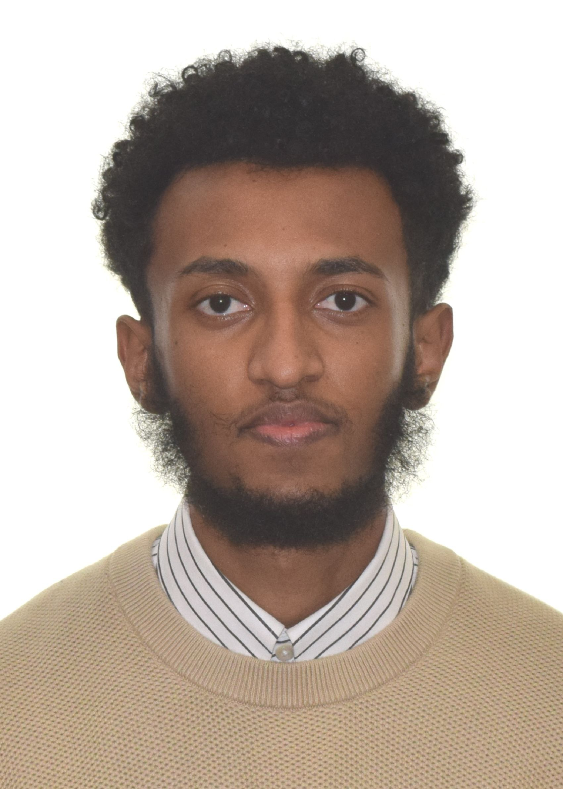

Surafel T. Ayalew
Phone: 437-556-8648
Email: surafelayalew1216@gmail.com
Linkedin

Summary
Driven and curious technologist building a strong foundation in artificial intelligence,
machine learning, and web development (HTML, CSS, JavaScript, Python). Passionate about
continuous learning, solving complex problems, and contributing to cutting-edge AI projects.
Eager to apply skills and knowledge to advance AI research and develop impactful, intelligent solutions.
Technical and Soft Skills
- Programming Languages
- Ms Office Suite
- Excellent communication skills
- Excellent time management skill
- Attention to detail
Education
Bachelor of Biomedical Engineering
Addis Ababa University
June 2021 - Aug 2022
- Completed first year with a GPA of 3.7/4
- Discontinued due to relocation to Canada
High School Diploma
Debre Tsige Secondary School
September 2018 - March 2021
Trainings & Certifications
Full Stack Web Development
Udemy
- HTML, CSS, Java Script, Python
Voluntary Experience
Home Tutor
January 2023 - Present
- Provided personalized tutoring, developed customized study plans,
conducted review sessions, and monitored student progress to ensure
academic improvement
- Subjects:Biology, Mathematics, Physics, Chemistry(All Natural Science Subjects)
Red Cross Society
September 2016 - Present
- Blood Drives:Organized and promoted school blood drives,
fascilitating donor recruitment and support
- Fundraising Events:Executed fundraising events, such as bake sales
and charity runs raising significant funds